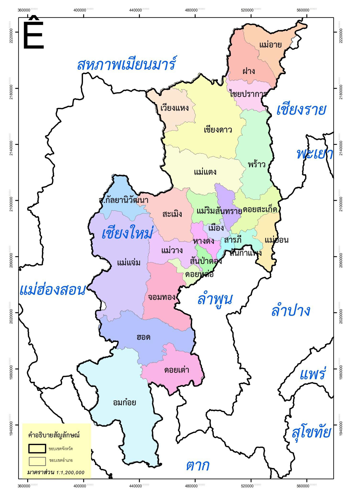
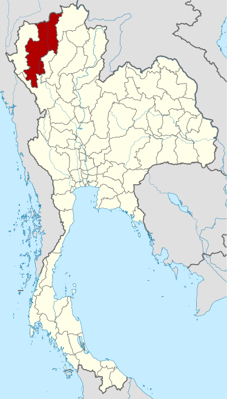

จังหวัดเชียงใหม่ (ตัวอำเภอเมือง)
ตั้งอยู่ ณ ลองติจูด 18 องศาเหนือ ละติจูด 98 องศาตะวันออก
สูงจากระดับน้ำทะเลประมาณ 310 เมตร
ส่วนกว้างจากทิศตะวันตกจรดทิศตะวันออกประมาณ 138 กิโลเมตร
ส่วนยาวจากทิศเหนือจรดทิศใต้ประมาณ 428 กิโลเมตร
ห่างจากกรุงเทพมหานคร 696 กิโลเมตร
